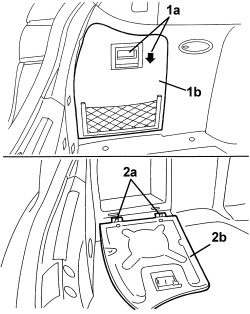

7040B17 LUGGAGE COMPARTMENT/LOAD PLATFORM SIDE TRIM FLAP (ONE), LH OR RH REPLACE
- Path
- Procedures > 70 FITTINGS > 7040 BODY INTERIOR FITTINGS AND TRIM > 7040B LUGGAGE COMPARTMENT AND LOAD PLATFORM TRIMS > 7040B17 LUGGAGE COMPARTMENT/LOAD PLATFORM SIDE TRIM FLAP (ONE), LH OR RH REPLACE
- Kind
- repair procedure (removal / refitting; the operation number is the code)
- Applies to
- all engines; all production periods; only with equipment: Station Wagon
- Interactive page
- https://sloeber94.github.io/elrnDB/#/939005452
Applies to: all engines; all production periods; only with equipment: Station Wagon
 Removing
Removing
 Refitting
Refitting- Open the tailgate.
1. Lower the handle (1a) and open the flap (1b).
2. Release the lower retainers (2a) and keep the flap (1b).

Applies to: all engines; all production periods; only with equipment: Station Wagon
Refitting
Removing- Check that the flap is not damaged.
- Attach the lower retainers for the flap.
- Close the flap and attach the handle.
- Close the tailgate.